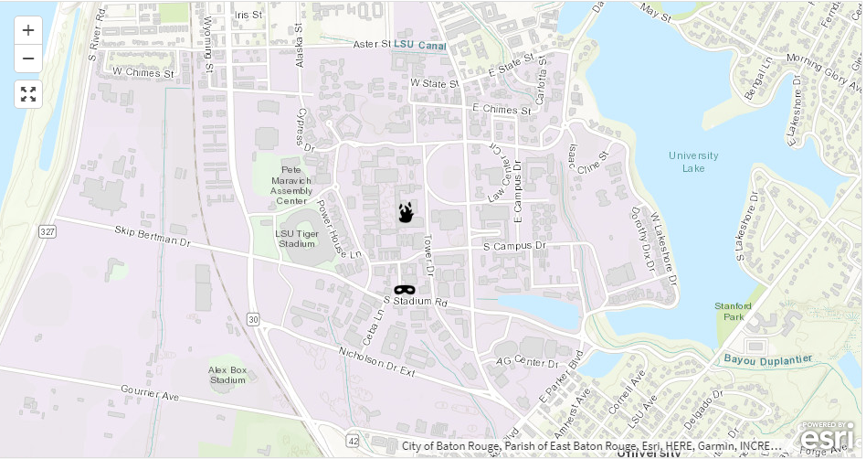

Book Assignment 1
Tour of Lakeview Louisiana, where I went to high school.
Point of Interest-Lakeview
Tour of Lakeview Louisiana, where I went to high school.
Point of Interest-Lakeview
4.5+ Magnitude Earthquakes around the world.

Volunteered geographic information system for Baton Rouge, Louisiana.
Restaurants, Grocery Stores, and Gas Stations in New Orleans, Louisiana

A web map with Leaflet and a polygon with a popup in my hometown Belle Chasse, Louisiana.

A web map with Leaflet and a polygon with custom symbology in my hometown Belle Chasse, Louisiana.

Used GeoJSON data on a map to display the food truck areas in New Orleans, Louisiana.

Using different basemaps to display the food truck areas in New Orleans, Louisiana.